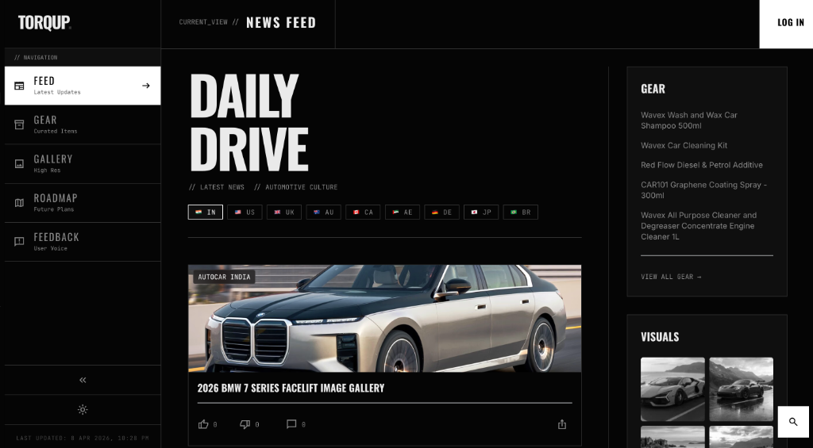
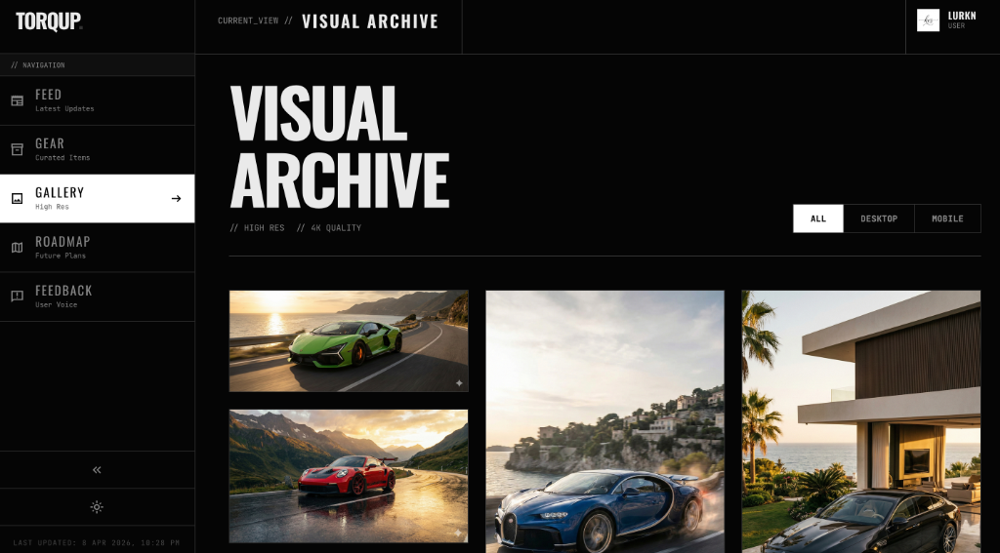

Automotive Hub · AI Integration · Product Strategy
Overview
Automotive enthusiasts were scattered across Reddit threads, YouTube channels, WhatsApp groups, and separate marketplaces. Getting useful, trustworthy information about a specific car meant hunting across five different platforms.
TorqUp is a unified platform for automotive enthusiasts — bringing together a curated news feed, gear marketplace, visual archive, and AI-powered decision tools in one coherent product.

The Problem
The automotive enthusiast community had energy but no single home. Existing platforms either focused on one thing (marketplace, or news, or community) or tried to do everything badly. The visual quality of available content was inconsistent. AI tools were nowhere in sight.
Finding the right information — spec comparisons, ownership costs, community opinions — required visiting 4–5 different sites and manually synthesising the results.
Most automotive content online is low-resolution, watermarked, or behind paywalls. Enthusiasts deserved a high-quality visual commons — free, curated, and searchable.
"Should I buy this car?" was still a question that required hours of forum reading. An AI that understood automotive context and could give real answers was missing entirely.

Approach
The product was designed around three pillars: a curated daily feed (country-filtered, category-tagged), a high-resolution visual archive (4K quality, free to browse), and an AI layer that could answer specific questions about cars, specs, and buying decisions.
The dark, editorial design language was intentional — inspired by high-end automotive media, it signals quality and seriousness. The sidebar navigation keeps context clear while allowing deep browsing without losing your place.
"A passionate community deserves a product that matches their passion. Generic aggregator design wasn't going to cut it."
The gear marketplace integrates contextually — when you're reading about a product category, relevant gear surfaces organically. The experience is designed to feel like talking to a knowledgeable friend, not browsing an e-commerce catalogue.
Outcome
TorqUp launched as a unified platform combining all four pillars — news, visuals, gear, and AI — in a single coherent product. The editorial design language differentiated it immediately from generic aggregators.
The AI integration reduced the "research to decision" time for buying decisions from hours to minutes, by surfacing structured comparisons, community sentiment, and expert context in one place. The visual archive built an audience of enthusiasts who returned purely for the imagery — a distribution flywheel that drove organic growth.